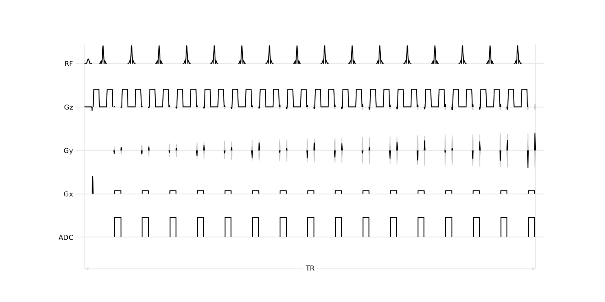
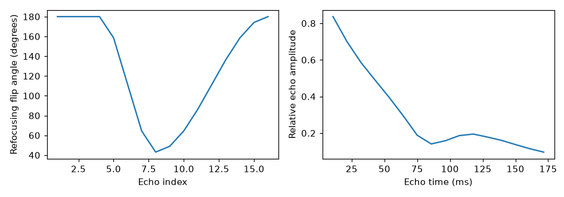
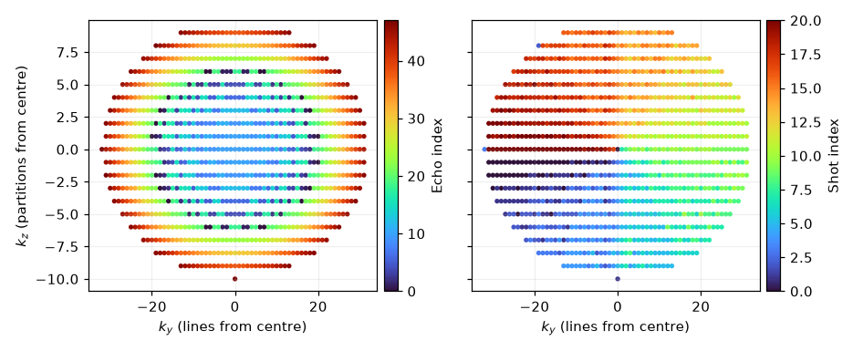

Note
Go to the end to download the full example code.
3D fast spin echo#
One excitation followed by a CPMG train of refocusing pulses, with one
(line, partition) view acquired per echo. Signal amplitude at echo
\(m\) weights the corresponding k-space view.
Echo ordering therefore determines the modulation transfer function and
point-spread function.
Baseline#
A short train limits T2 weighting across the train. Centre-out view ordering assigns the earliest echoes to the centre of k-space.
from pypulseqpp.sequences import fse3D_sequence
PRESCRIPTION = {
"n_x": 128,
"n_y": 96,
"n_z": 16,
"fov_x": 0.2,
"fov_y": 0.2,
"fov_z": 0.1,
}
baseline = fse3D_sequence(**PRESCRIPTION, etl=16, te=None, tr=None, n_dummy=0)
print(
f"{baseline.num_blocks} blocks, {baseline.duration()[0]:.1f} s, "
f"echo spacing {baseline.get_definition('EchoSpacing')[0] * 1e3:.2f} ms, "
f"TE {baseline.get_definition('TE')[0] * 1e3:.1f} ms"
)
5100 blocks, 14.2 s, echo spacing 11.60 ms, TE 12.4 ms
Sequence diagram#
The automatically detected repetition contains the excitation, the CPMG train with a crusher pair around every refocusing pulse, and the phase and partition encodes before and after each readout. The solid trace is a representative train; the shaded traces retain the range of encodes.

namespace(diagram=<mrsd.diagram.Diagram object at 0x7f6b0ae48d70>, tr=62, underlays=[1, 6, 11, 16, 21, 26, 31, 36, 41, 46, 51, 56, 61, 66, 71])
Echo order and shot order#
Echo index identifies the position of a view within one CPMG train and thus its T2 weighting. Shot index identifies the excitation and repetition that acquired the view. Centre-out ordering assigns the least attenuated echoes to central k-space.

<Figure size 946x396 with 4 Axes>
Train length#
A longer train requires fewer excitations but samples later points of the T2 decay, increasing attenuation toward the edge of k-space.
long_train = fse3D_sequence(**PRESCRIPTION, etl=48, te=None, tr=None, n_dummy=0)
ETL shots scan (s) train (ms)
ETL 16 16 75 14.2 185.6
ETL 48 48 25 14.0 556.8
T2 weighting#
The simulated signal envelope uses the stored refocusing-angle schedule and echo spacing. Each line’s weight is the envelope at the echo index that read it, averaged over the partitions it was read at.
import torchsim
#: Relaxation times (ms) of the tissue the envelopes are simulated for.
T1_MS, T2_MS = 1200.0, 60.0
envelopes, weighting = {}, {}
for name, seq in (("ETL 16", baseline), ("ETL 48", long_train)):
angles = np.asarray(seq.get_definition("RefocusingFlipAngles"))
esp_ms = 1e3 * seq.get_definition("EchoSpacing")[0]
amplitude = np.abs(
np.asarray(torchsim.fse_sim(flip=angles, ESP=esp_ms, T1=T1_MS, T2=T2_MS))
)
line, _, echo, _ = _views(seq, PRESCRIPTION["n_y"], PRESCRIPTION["n_z"])
offsets = np.unique(line)
weighting[name] = (
offsets,
np.array([amplitude[echo[line == offset]].mean() for offset in offsets]),
)
envelopes[name] = amplitude

/opt/hostedtoolcache/Python/3.12.14/x64/lib/python3.12/site-packages/torch/jit/_script.py:1491: FutureWarning: `torch.jit.script` is deprecated. Please switch to `torch.compile` or `torch.export`.
warnings.warn(
<Figure size 946x330 with 2 Axes>
Central k-space receives nearly the same weight for both train lengths because it is acquired first. The longer train attenuates outer k-space more strongly, increasing the point-spread width along the phase-encode axes.
Safety checks#
A passing check does not establish that a sequence is safe to run on a scanner or on a subject. The nerve model below is a demonstration, not a scanner’s.
from pypulseqpp import safety
model = safety.ChronaxieModel(chronaxie=334e-6, rheobase=23.4, alpha=0.333)
grad_ok, grad = safety.check_max_grad(baseline)
slew_ok, slew = safety.check_max_slew(baseline)
cont_ok, cont = safety.check_grad_continuity(baseline)
pns_ok, pns = safety.check_pns(baseline, model)
check result peak
gradient amplitude pass 39.5 mT/m
slew rate pass 164 T/m/s
gradient continuity pass 0 discontinuities
peripheral nerve stimulation pass 0.99 of threshold
Total running time of the script: (0 minutes 5.119 seconds)